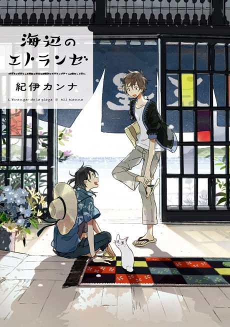

The Stranger by the Shore
海辺のエトランゼ
The anime covers the whole manga.
7.7AniList score
—Animeter, no votes yet
1film
Rate it or report where you stopped
Anime finished. Where does the manga pick up?
StatusFully adapted
The film covers a single volume, the original Umibe no Etranger. The story continues in the sequel manga.
11
Movie